重點摘要
這份講義的主線是「一套通用的復健邏輯，套用在一長串常見神經科疾病上」。先建立兩個基礎工具：①病灶定位——用四肢步態表現反推病灶在哪一段脊髓／腦；②四階段復健框架（急性期→增生期→鞏固期→組織期）——幾乎每一種神經疾病的復健方案都是套用同一套時間軸，只是每個階段的動作內容依疾病特性微調。接著逐一介紹十餘種臨床常見的神經疾病（從頸椎不穩定到坐骨神經損傷、前庭疾病），每種都遵循「病因／好發族群 → 診斷 → 是否手術 → 復健重點」的固定敘事。後半段轉向輔助治療工具箱（針灸、雷射、tPEMF、高壓氧）與居家運動／輔具，最後以篇幅最長的退化性脊髓病（DM）作為壓軸深入案例，串連基因致病機轉、分期、與「復健強度確實能延長存活期」的實證研究。讀這份講義的訣竅是：先把病灶定位表與四階段框架記熟，之後每種疾病只需要記「跟通用框架不一樣的地方」即可，不需要每種疾病都從頭硬背。點下方任一分類可直接跳到該小節。
步態反推脊髓分段
所有疾病共用的時間軸
13 種常見神經疾病
分級與診斷流程
針灸／雷射／tPEMF／HBOT
PNF、輔具、居家調整
機轉、分期、存活期實證
- 病灶定位靠「前肢＋後肢步態組合」反推：C1-C5 病灶前後肢皆為 上運動神經元（Upper Motor Neuron, UMN）；C6-T2 病灶前肢 下運動神經元（Lower Motor Neuron, LMN）＋後肢 UMN（「雙引擎」步態）；T3-L3 病灶前肢正常＋後肢 UMN；L4-S1 病灶前肢正常＋後肢 LMN——這張表是全份講義的定位基礎，務必先記熟。
- 幾乎所有神經疾病的復健方案都套用同一套「急性期→增生期→鞏固期→組織期」四階段框架（約對應第 1–5 天／5–21 天／21–60 天／61 天以後），差異只在於每個階段放什麼動作——用這個框架記憶可以大幅減少死背量。
- Compressive vs Non-compressive 是椎間盤疾病分類的核心概念：Hansen type I（extrusion）、type II（protrusion）與 HNPE 屬於「壓迫性」；ANNPE（又稱 Hansen type III）與 FCE（缺血性脊髓病）屬於「非壓迫性」。2025 年回溯性研究顯示嚴格限制運動與否，對 ANNPE/HNPE/FCE 的預後並無顯著差異。
- 深層痛覺消失（deep pain loss）是 椎間盤疾病（Intervertebral Disc Disease, IVDD） 最關鍵的預後指標：超過 48 小時的深層痛覺喪失，預後明顯不良。
- 前庭疾病常被飼主誤認為「中風」：典型表現為嚴重共濟失調（甚至跌倒）、頭傾、眼振（無 Horner's syndrome）、嘔吐；好發於 8 歲以上大型犬，診斷靠排除法。
- 針灸處方遵循「由簡入繁」的四級治療選項邏輯：從單純 AP（局部＋遠端穴位）逐步疊加 EAP（電針）與更多遠端穴位，四肢癱瘓與後軀癱瘓各有專屬處方組合，須搭配中藥方（如 Double PII）。
- 退化性脊髓病是本章實證等級最高的案例：Kathmann 2006 的研究顯示完全不復健、中度復健、積極復健三組的存活期分別是 55 天、130 天與 255 天——復健強度與存活期呈現明確的量效關係，是說服飼主積極復健的最有力數據。
解剖學與病灶定位 Anatomy & Lesion Localization
神經科復健的第一步永遠是定位病灶——因為復健方案、預後判斷都建立在「病灶在哪一段」之上。
本體感覺與步態相關傳導路徑理解
- 本體感覺路徑（Conscious proprioceptive pathway）：經薄束（fasciculus gracilis）與楔束（fasciculus cuneatus）上行，依序經延髓、腦橋、中腦、間腦到大腦；小腦則負責協調運動與平衡。
- 步態產生（Gait generation）相關脊髓神經束：前庭脊髓束（vestibulospinal tract）、網狀脊髓束（reticulospinal tract）、紅核脊髓束（rubrospinal tract）、皮質脊髓束（corticospinal tract）共同參與步態的產生與調控。
病灶定位表（依步態表現分段）必考 學長姐整理
顱內病灶與脊髓各分段病灶會呈現截然不同的前肢／後肢／步態組合，是神經科理學檢查後第一個要建立的判斷：
| 病灶區 Lesion location | 前肢 Thoracic limbs | 後肢 Pelvic limbs | 步態 Gaits |
|---|---|---|---|
| 顱內 Intracranial | Normal | Normal | Disorientation 東倒西歪 |
| C1–C5 | UMN 上位神經元 | UMN | Ataxia, long stride 大步 |
| C6–T2 | LMN 下位神經元 | UMN | Ataxia, two-engine 雙引擎 |
| T3–L3 | Normal | UMN | Ataxia, long stride |
| L4–S1 | Normal | LMN | Ataxia, short stride 小步 |
| S1–S3 | Normal | LMN | Normal |
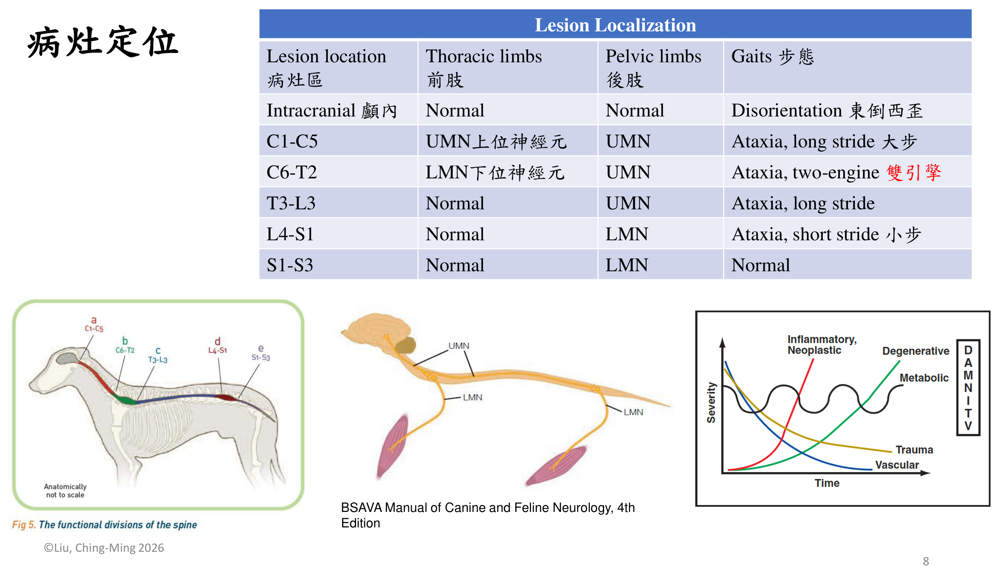
學長姐考前整理第 1 頁列「Neurology anatomy：C1–C5、C6–T2：Brachial plexus（臂神經叢）、T3–L3、L4–S3：Lumbosacral plexus（腰薦神經叢）」；第 11 頁貼了一張「C1–C5／C6–T2／T3–L3／L4–S3 × 前肢／後肢 UMN／LMN」的表，旁註「有考這個，挖掉問你是啥」（學長姐回憶，非官方）。對照：C1–C5 前 UMN 後 UMN；C6–T2 前 LMN 後 UMN；T3–L3 前正常 後 UMN；L4–S3 前正常 後 LMN。講義 p.8 的步態表把後段拆成 L4–S1 與 S1–S3，p.9 的徵象表用 L4–S3，兩者都要認得。
依脊髓分段的詳細神經學徵象必考
除了步態，各分段病灶在前肢、後肢、膀胱排尿、會陰反射與尾巴張力上也各有特徵性表現，是理學檢查時交叉驗證病灶定位的依據：
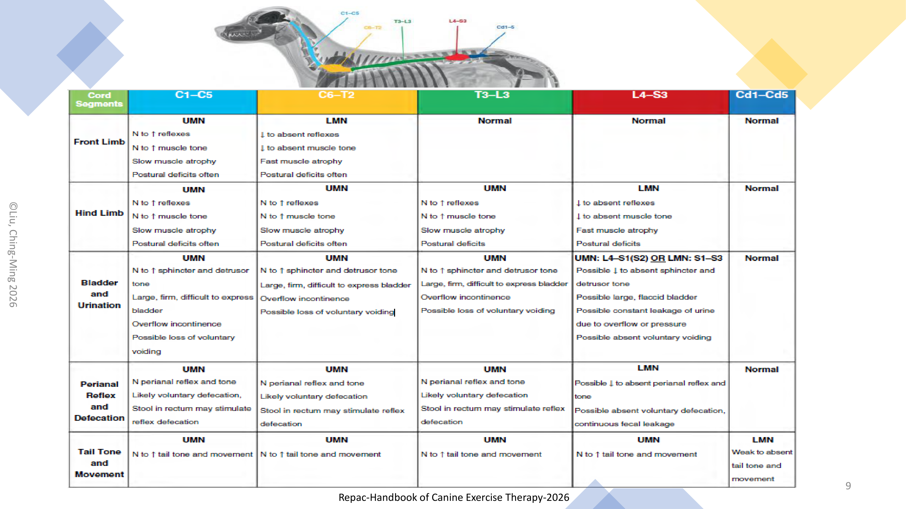
神經功能恢復順序 Neurodevelopmental Sequence (NDS)必考
NDS 是所有幼犬（與復健中患犬）發展／恢復正常步行能力的必經邏輯順序，復健方案的階段設計基本上就是沿著這條順序推進：
患犬必須能依序完成「側躺→趴正→坐立→站立→行走」的轉換，才算具備正常步行能力；復健訓練中常見的「坐站練習（sit to stand）」「趴坐轉換（down to sit）」正是針對這條發展順序設計的功能性訓練動作。
復健四階段框架 The Four-Phase Rehabilitation Model
講義每一種疾病的復健方案都用同一套四階段時間軸與目標；各期放什麼項目則依疾病不同（見下一節總表）。下表的處置欄以講義第一個疾病 A/A 不穩定為例（p.12）。
四階段時間與目標必考
| 階段 | 時間 | 目標 | 處置（以 A/A 不穩定為例，p.12） |
|---|---|---|---|
| 急性期 Acute | 第 1–5 天 | 促進修復（promote regeneration） | 疼痛管理、擺位（positioning）、按摩、PROM、CP exercises |
| 增生期 Proliferative | 第 5–21 天 | 活動所有關節與肢體 | 按摩、PROM、重心偏移（weight shift）、協助站立 |
| 鞏固期 Consolidation | 第 21–60 天 | 恢復協調性與動作 | 按摩、PROM、搖擺枕頭（wobble cushion）、平衡板（wobble board）、協助站立 |
| 組織期 Organization | 第 61 天以後 | 強化核心與背部肌群 | 禁止玩耍、禁止爬樓梯、AROM、坐站（sit to stand）、趴坐（down to sit）、give-me-5、吊帶輔助行走（sling walk）、水中跑步機（UWTM，水位到肘） |
常見神經科疾病復健方案 Common Neurological Diseases for Rehab
講義 p.12–26 依序介紹 12 種常見神經疾病，每種都是「病因／好發 → 診斷 → 治療選項 → 四階段復健方案」。先看總覽，再看四階段總表，最後看各病重點。
總覽比較表必考
| 疾病 | 好發族群／病因 | 是否手術 | 預後關鍵 |
|---|---|---|---|
| A/A（C1/C2）不穩定 | 先天性或創傷性 | 可手術固定，或頸圈外固定 | 依穩定程度而異 |
| CCSM（Wobbler） | 先天性（大型犬，如大丹）；椎間盤源性（中年犬，如杜賓） | 可手術 | 依壓迫程度 |
| IVDD type I | 軟骨營養不良品種（臘腸犬） | 手術病例 | 深層痛覺消失 >48h 預後差 |
| IVDD type II | 非軟骨營養不良品種，胸腰椎 | 多為非手術 | 10% 僅背痛無神經缺損 |
| ANNPE／HNPE／FCE | 創傷性脊髓挫傷／缺血性脊髓病 | 非手術 | 運動限制與否不影響預後（2025 研究） |
| 退化性脊髓病 DM | 遺傳性，SOD1 基因突變，T3-L3 | 非手術 | 中位存活期 6–12 個月 |
| 臂神經叢撕裂 | 強力後拉＋前肢外展創傷（如車禍） | 非手術（或截肢） | 依完全／部分撕裂而異 |
| 馬尾部症候群 | 神經根壓迫，退行性腰薦椎狹窄 | 可手術 | 大小便失禁為警訊 |
| 變形性脊椎病（骨刺） | 椎體骨贅形成壓迫脊神經 | 非手術 | 以疼痛控制為主 |
| 浣熊犬麻痺症 | 特發性腹側神經根軸突／髓鞘發炎 | 非手術，支持照護 | 3–6 週可自發痊癒 |
| 坐骨神經損傷 | L6-S2 起源神經損傷 | 可手術或保守治療 | 脛神經單獨受損預後較佳 |
| 前庭疾病 | 特發性，好發 8 歲以上大型犬 | 非手術，症狀治療 | 常自限，易被誤認中風 |
各疾病四階段方案總表（講義原文）必考
學長姐整理的標題寫「每個表格、分級都很重要」。下表照講義各疾病投影片「Rehabilitation plan」逐格轉寫，粗體是該病特有、容易考的項目。
| 疾病 | 急性期 1–5 天 促進修復 | 增生期 5–21 天 活動所有關節與肢體 | 鞏固期 21–60 天 恢復協調與動作 | 組織期 61 天～ 強化核心與背肌 |
|---|---|---|---|---|
| A/A 不穩定（p.12） | 疼痛管理、擺位、按摩、PROM、CP exercises | 按摩、PROM、重心偏移、協助站立 | 按摩、PROM、搖擺枕頭、平衡板、協助站立 | 禁止玩耍、禁止爬樓梯、AROM、坐站、趴坐、give-me-5、sling walk、UWTM（水位到肘） |
| CCSM（p.13） | 疼痛管理、術後腫脹、按摩、PROM、CP exercises、擺位 | 按摩、PROM、協助站立、以胸背帶／吊帶協助坐站、頸部慢速零食伸展（slow cookie stretch on neck） | AROM、rebounding、sling walk | UWTM |
| IVDD type I（p.14） | 疼痛管理、傷口腫脹照護、按摩、PROM、刺激足部反射、重心偏移、站立 | 按摩、PROM、慢走、UWTM（有自主運動才加） | 強化肌肉、短時間 UWTM、繞樁（weave poles） | 增加運動強度、游泳 |
| IVDD type II（p.15） | 疼痛管理、按摩、PROM、CP exercises、避免特定動作 | 按摩、PROM、CP exercises | 跑步機、UWTM、cavaletti rails | 游泳、UWTM、終身治療（life-long therapy） |
| FCE（p.16） | 按摩、PROM、CP exercises | 按摩、PROM、重心偏移、UWTM（有自主運動才加） | 跑步機、cavaletti rails | 游泳、UWTM |
| 退化性脊髓病 DM（p.19） | 講義沒有分期方案：按摩、PROM、CP exercises、UWTM、游泳 | |||
| 臂神經叢撕裂（p.20） | 按摩、PROM | 按摩、PROM | 按摩、PROM、伸展 | 前方懸掛零食誘導撥爪（pawing at a treat dangling）、give-me-5、爬樓梯 |
| 馬尾症候群（p.21） | 疼痛管理、術後腫脹、按摩、PROM、CP exercises | （同急性期） | AROM、跑步機、UWTM、cavaletti rails | UWTM、游泳 |
| 變形性脊椎病（p.22） | 按摩、PROM、簡單 CP exercises | 按摩、PROM、短時間 UWTM 與控制行走 | UWTM、不同地面行走 | 游泳、UWTM、行走 |
| 浣熊犬麻痺症（p.23） | 目標：誘發屈肌反射；疼痛管理、按摩、PROM、CP 刺激運動 | 目標：擺位與站立；站立、水中行走 | UWTM、陸上跑步機、穩定球、NMES | 游泳、UWTM、行走 |
| 坐骨神經損傷（p.24） | 講義沒有分期方案：穿保護靴、矯具、按摩、PROM、CP 與模式化運動（pattern exercises）、UWTM | |||
| 前庭疾病（p.26） | 目標：誘發屈肌反射；按摩、PROM、休息、避免興奮 | 目標：擺位與站立；刺激屈肌反射、站立運動 | 慢走、UWTM 中行走、協調動作與 CP exercises | 增加運動強度、不穩定動作模式 |
名詞（補充）：CP exercises＝本體感覺（conscious proprioception）運動；AROM＝主動關節活動；rebounding＝在彈性面上反覆輕彈重心的訓練；cavaletti rails＝跨越橫桿；weave poles＝繞樁。
各疾病重點必考
寰樞椎不穩定，先天性或創傷性。診斷：理學檢查、X 光、CT、MRI。治療選項：手術固定、外固定、頸圈、針灸／中藥／雷射／PEMF＋復健。
復健特色：組織期特別強調禁止玩耍、禁止爬樓梯（避免頸部劇烈活動，此理由為補充），以 AROM、坐站／趴坐、give-me-5、sling walk 與 UWTM（水位至肘關節）訓練核心與背部肌力（p.12）。各期完整項目見上方總表。
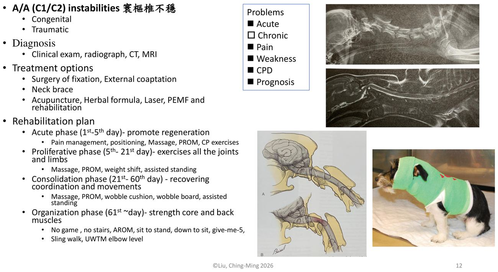
病因為 Type 2 椎間盤＋脊椎關節囊＋韌帶病變，分兩型：Osseous-associated CSM（先天性，好發年輕大型犬如大丹犬，C1-C5）與Disc-associated CSM（椎間盤突出，好發中年犬如杜賓犬，C6-T2）。診斷 MRI 優於 CT。
復健特色：增生期加入「slow cookie stretch on neck」（緩慢頸部伸展誘導動作）與 harness/sling 輔助坐站；鞏固期加入 rebounding（彈性反覆刺激）與 sling walk。
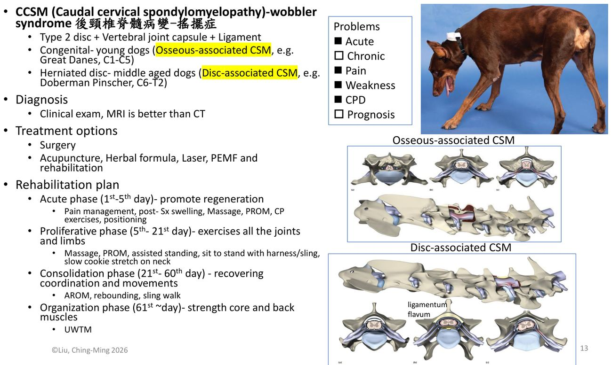
好發軟骨營養不良品種（如臘腸犬），表現輕癱到四肢／後肢癱瘓不等，屬手術病例。深層痛覺持續喪失超過 48 小時，預後不良，是本病最重要的預後指標。
復健特色：急性期加入「刺激足部反射、重心偏移、站立誘導」；增生期若有自主運動出現，加入 UWTM；鞏固期加入 weave poles（繞樁）強化協調；組織期強調提高運動強度＋游泳。
好發非軟骨營養不良品種，多發生於胸腰椎；約 10% 病例僅有背痛而無神經學缺損，多以非手術治療為主。
復健特色：急性期強調「避免特定動作」；鞏固期加入跑步機、UWTM、cavaletti rails（跨欄步行）；組織期強調游泳、UWTM，並可能需要終身復健治療。
壓迫性 Compressive
- Hansen type I（extrusion）椎間盤破裂
- Hansen type II（protrusion）椎間盤突出
- HNPE（Hydrated Nucleus Pulposus Extrusion）水合髓核脫出——水合的硬膜外椎間盤物質壓迫脊髓
非壓迫性 Non-compressive
- ANNPE（Acute Non-compressive Nucleus Pulposus Extrusion）急性非壓迫性髓核脫出——創傷性脊髓挫傷，又稱「high-velocity-low-impact disc extrusion」或 Hansen type III
- FCE（Fibrocartilaginous Embolism）纖維軟骨性栓塞——又稱缺血性脊髓病（ischemic myelopathy）
針對 40 隻犬罹患 ANNPE、HNPE 或 FCE，追蹤出院後 4 週的疾病復發與復原情形：嚴格限制運動休息組（n=18）與無特別限制活動組（n=22）比較，復發與復原程度並無顯著差異。結論：讓這類動物適度運動並不影響其預後——這是臨床上常被問到「要不要嚴格籠內休息」的實證依據。
脊髓某段動脈／靜脈血液供應被纖維軟骨栓塞阻斷，表現輕癱到四肢／後肢癱瘓，發作當下動物常會突然尖叫（yelp）。非手術病例，診斷靠臨床檢查＋MRI。
復健特色：增生期若有自主運動出現加入 UWTM；鞏固期加入跑步機與 cavaletti rails；組織期加入游泳與 UWTM。
臂神經叢起源自 C6-T2 脊髓節段；因強力向後拉扯合併前肢外展的創傷（例如車禍）造成撕裂，分完全撕裂（C6-T1）與部分撕裂（C6-C7 或 C8-T1）。診斷：理學檢查、EMG、CT、MRI。非手術病例，選項包含截肢或復健。
復健特色：各期皆以按摩、PROM 為主；組織期加入功能性訓練——「懸掛零食誘導前爪撥動（pawing at a treat dangling）」、give-me-5、爬樓梯。
神經根壓迫，常見病因為退行性腰薦椎狹窄（Degenerative L/S Stenosis, 退化性腰薦狹窄（Degenerative Lumbosacral Stenosis, DLSS））；典型表現為大小便失禁、尾巴下垂。診斷：理學檢查、CT、MRI，可手術。
復健特色：急性、增生期皆強調疼痛管理與術後腫脹照護；鞏固期加入 AROM、跑步機、UWTM、cavaletti rails；組織期加入 UWTM 與游泳。
椎體上形成骨贅（osteophyte），壓迫脊神經並造成疼痛性肌肉緊繃。診斷：理學檢查、X 光。非手術病例。
復健特色：急性期以簡單 CP exercises 為主；增生期加入短時間 UWTM＋控制性行走；鞏固期加入不同地面行走訓練（增加本體感覺挑戰）；組織期加入游泳與 UWTM。
腹側神經根軸突與髓鞘的特發性發炎，表現由後往前進展的輕癱或癱瘓、合併 LMN 徵象，3–6 週內可自發痊癒是本病最重要的特徵。診斷：理學檢查、腦脊髓液（Cerebrospinal Fluid, CSF）、電生理診斷。非手術，以支持照護為主。
復健特色：急性期目標是誘發屈肌反射（elicit the flexor reflex）；增生期加入站立與水中行走訓練；鞏固期加入 UWTM、陸上跑步機、穩定球運動、NMES（神經肌肉電刺激）。
坐骨神經（sciatic nerve）整合 L6-S2 脊髓節段的神經根；受損後只剩股神經支配的股四頭肌（stifle extensor）維持功能，動物雖可負重，但無法屈曲膝關節，也無法屈曲或伸展跗關節與趾（p.24），造成屈爪行走（knuckling）與蹠行姿勢（plantigrade stance），並有明顯肌肉萎縮；神經受壓迫時會有劇烈疼痛。診斷：理學檢查、EMG。可手術或保守治療。
復健特色：穿戴靴子與矯具保護、按摩、PROM、CP 與模式化運動（pattern exercises）、UWTM。只有脛神經受損的動物功能恢復較佳；坐骨神經或腓神經受累則較差；多數損傷屬於神經失用（neurapraxia）或軸突斷裂（axonotmesis），可望恢復功能性使用。
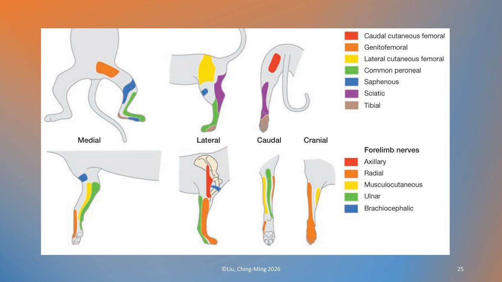
多為特發性，好發8 歲以上大型犬；飼主常誤以為是「中風」。典型表現：嚴重共濟失調甚至跌倒、頭傾、眼振（無 Horner's Syndrome）、嘔吐；可能出現「矛盾性（paradoxical）」表現。診斷靠理學檢查＋排除其他疾病。治療：症狀支持（止吐藥）＋針灸與復健。
復健特色：急性期目標是誘發屈肌反射，按摩、PROM，讓動物休息並避免興奮刺激；增生期加入站立訓練；鞏固期加入緩慢步行＋UWTM 協調動作訓練；組織期加入不穩定運動模式訓練提高運動強度。
癱瘓總論：分級與診斷流程 Paralysis Grading & Diagnostic Workflow
在進入個別疾病細節之前，先建立「癱瘓」這個臨床名詞本身的分級與診斷邏輯。
什麼是癱瘓（Paralysis）？必考 學長姐整理
- 癱瘓一般指脊髓損傷或壓迫導致肢體自主動作功能出現問題，依程度分為輕癱（paresis）、截癱（plegia）、癱瘓（paralysis）。
- 依分布範圍分類：四肢同時發生（tetra-）、單側偏癱（hemi-）、後半身癱瘓（para-），通常與病灶部位直接相關。
- 無深層痛覺（deep pain）表示預後不佳——這是貫穿全份講義最重要的預後指標。
- 其他核心概念：共濟失調（Ataxia）、無力（weakness）、上位神經元（UMN）與下位神經元（LMN）徵象。
癱瘓診斷流程必考
- CNS：顱內、C1-C5、C6-T2、T3-L3、L4-S1~3
- PNS（周邊神經系統）
- NMJ（神經肌肉接合處）
- 肌肉 Muscle
血液檢查、CT、MRI、腦脊髓液（CSF）分析、其他特殊檢查，依定位結果選擇對應的影像與實驗室工具，逐步縮小鑑別診斷範圍後才能得到最終診斷。
癱瘓復健治療與照顧總覽理解
不論病因為何，癱瘓動物的照護可拆成兩大類工具：
- 針灸 Acupuncture
- 雷射 Laser
- tPEMF（標地式脈衝式電磁場治療）
- HBOT（高壓氧治療）
- 運動復健 Therapeutic exercise
- 輔具使用 Assistive devices
- 居家環境調整 Home environment modification
輔助治療模式：針灸、雷射、tPEMF、HBOT
四種常用於神經科復健的輔助治療工具，各有明確的處方細節或實證研究支持。
針灸治療 Acupuncture必考
講義 p.32、p.34 引用的兩篇針灸回溯研究是講者劉金鳴老師團隊發表的：頸椎神經疾病（J Vet Sci 2016）與 84 隻胸腰椎脊髓疾病犬的標準化針灸處方（Pak Vet J 2015）；下面的四肢癱瘓與後軀癱瘓處方即出自這兩篇。
針灸處方依「四肢癱瘓」與「後軀癱瘓」分別設計，皆採「治療選項由簡入繁」的疊加邏輯——從單純局部＋遠端穴位的 AP（acupuncture），逐步疊加 EAP（electroacupuncture，電針）與更多遠端穴位。
- 選項 1：局部穴位 JJJ（頸夾脊穴，C1-C3-C5）＋遠端穴位 SI-3、LIV-3、LI-4
- 選項 2：選項 1 加上 JJJ 局部穴位的 EAP
- 選項 3：選項 2 加上遠端穴位 BL-11＋TH-5 的 EAP（BL11 與 TH5 相連）
AP 留針 15 分鐘；EAP 20Hz、15 分鐘；每週兩次。中藥方：Double PII、Cervical Formula，1 g／5–10 kg，一天兩次口服。
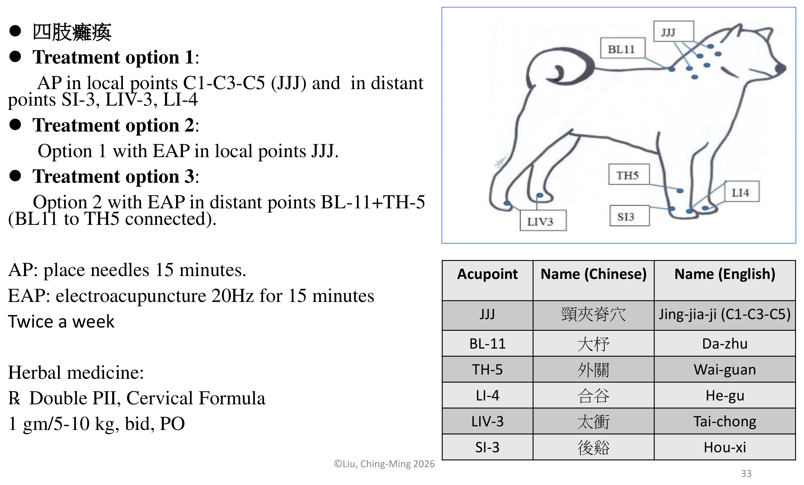
- 選項 1：局部穴位 HTJJ（華佗夾脊穴）＋遠端穴位 LIV-3、LI-4，留針 15 分鐘
- 選項 2：選項 1 加上遠端穴位 GB-30、GB-34
- 選項 3：選項 2 加上局部 HTJJ、遠端 GB-30＋GB-34（相連）的 EAP
- 選項 4：選項 3 加上後肢 Liu-feng（六縫）穴——目的是對肢體末端產生最強刺激
AP 留針 15 分鐘；EAP 20Hz、15 分鐘；每週兩次。中藥方：Double PII、Bu Yang Huan Wu，1 g／5–10 kg，一天兩次口服。
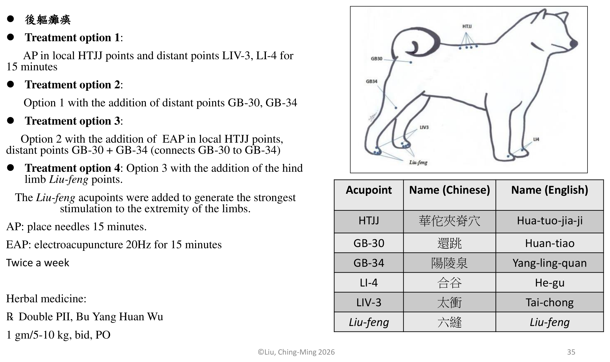
雷射治療 Laser理解
針對胸腰椎椎間盤突出（type I）手術術後病例，24 隻犬分為試驗組（術後復健＋雷射）與對照組（術後復健），使用4 級雷射照射術區，4 J/cm² 每日一次，連續 14 天，於術後 30 天與 60 天評估。結果：試驗組神經恢復量表進步更明顯，恢復行走時間由對照組 24 天縮短至試驗組 14 天。
t-PEMF 標地式脈衝式電磁場治療理解
針對半椎板切除術後病例，配合使用標地式脈衝磁波圈治療。53 隻犬分試驗組與對照組，住院期間每次 15 分鐘、一天 4 次；出院後居家持續使用，每次 15 分鐘、早晚各一次，共 1 週。6 週後評估：術區傷口癒合明顯較快，且止痛藥使用量減少。
高壓氧治療（Hyperbaric Oxygen Therapy, HBOT）理解
高壓氧治療具有多重神經保護作用：
減少氧化壓力
促進血管生成
調控發炎反應
減少神經系統水腫
其他效益：減緩神經病變痛、促進脊髓損傷修復、促進周邊神經再生、降低創傷性腦血管損傷、延緩運動神經元疾病發生。常用壓力艙設定為 1.4 ATA 或 2.0 ATA。
肢體復健運動方案與輔具 Limb Rehabilitation & Assistive Devices
從基本的關節活動與感覺刺激，到功能性運動訓練與居家輔具，是四階段框架中實際執行的動作內容庫。
肌肉、關節與本體感覺基礎項目必考
| 項目 | 頻率／時間 |
|---|---|
| PROM 被動關節活動 | 10–15 下 × 3–5 次／天 |
| Massage 按摩 | 15 分鐘 × 3 次／天 |
| Limb stretching 肢體伸展 | 15–20 分鐘 × 3 組 × 3 次／天 |
| Toe-grip 增加抓力 | — |
| Assisted standing 協助站立 | 2–5 分鐘 × 3–5 次／天 |
| Assisted ambulation 協助行走 | 5–15 分鐘 × 3–5 次／天 |
術後第 7 天開始 UWTM，2–3 分鐘／天，採低速高水位，之後視動物復原情況逐漸增加次數與阻力——這是水療介入時機與初始強度設定的具體參考值。
PNF（Proprioceptive Neuromuscular Facilitation）本體感覺神經促進術必考
用於促進神經肌肉反應的刺激技巧：
Tapping 拍、敲
Quick brushing 快速擦刷
Quick stretching 快速拉伸
Tickling paw 搔爪
Joint compression 關節按壓
Toe pinching＋withdrawal reflex 掐趾＋回縮反射
Tail stimulation 尾巴刺激
Rhythmic stabilization 節律性穩定
神經抑制（放鬆）術 Neuro-inhibitory Techniques必考
與 PNF 相反，用於降低過高張力／緩解緊繃的技巧：
Effleurage 輕撫法
Prolonged slow stretch 緩慢持續伸展
Light joint compression 輕度關節擠壓
Cryotherapy 冷療
Deep tendon pressure 肌腱深按
Rocking/oscillations 搖擺震盪
Digit flexion 腳趾屈曲
Kinesiology tape 肌內效貼紮
PNF 與神經抑制術是一對相反工具：張力低、反射弱時用 PNF「促進」；張力過高、肌肉緊繃痙攣時改用神經抑制術「放鬆」——考題常以情境描述動物的張力狀態，要求判斷該用哪一類技巧。
運動復健 Therapeutic Exercise理解
關節活動度、本體感覺、肌力、平衡
跨越橫桿（cavaletti）、復健球、平衡板、協助行走
居家運動復健：坐站練習、重心偏移、關節活動——這三項是最容易讓飼主在家自行執行、不需特殊器材的核心動作。
輔具使用 Assistive Devices理解
常見輔具種類：A-Frame（助行架）、Hoist（吊掛式輔助器）、Help 'Em Up 專用吊帶、Sling（懸吊帶）、Cart／輪椅、Toe grip／Toe Up（防滑趾套）、Booties（保護靴）、Theraband（彈力帶）。
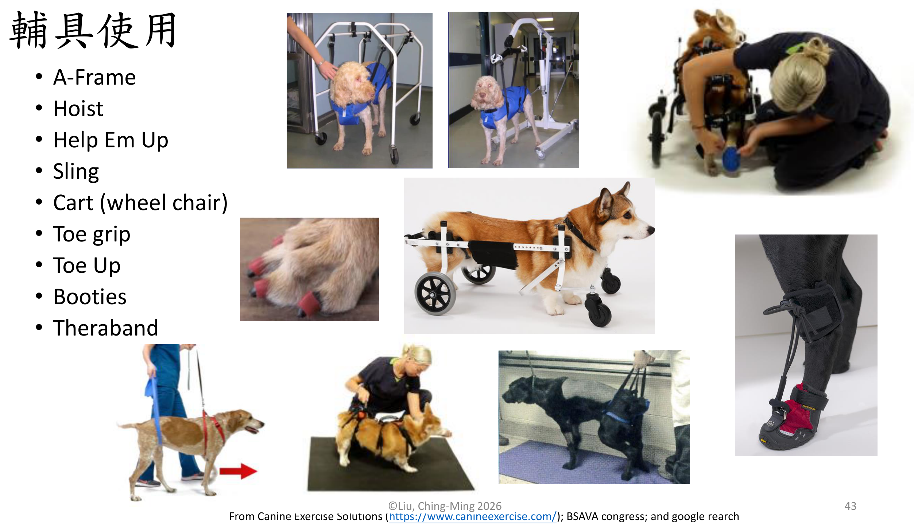
居家環境調整 Home Environment Modification看過
包含地面防滑處理、限制爬樓梯、提供斜坡輔助上下車／床鋪等，目的是降低患犬在日常生活中意外滑倒或二次受傷的風險，是復健方案能否長期成功的關鍵配套。
退化性脊髓病深入 Degenerative Myelopathy (DM)
講義以退化性脊髓病作為壓軸案例深入介紹，串連基因致病機轉、分期系統，與復健強度影響存活期的實證研究——是全份講義實證等級最高、也最完整的疾病案例。
什麼是退化性脊髓病（漸凍症）？必考
- 退化性脊髓病是一種運動神經元疾病，造成後軀逐漸癱瘓，病程不痛但進展緩慢且不可逆。
- 與 SOD1（superoxide dismutase）基因突變有關。
- 此基因突變引起脊髓白質髓鞘脫失（demyelination）、軸突退化（axonal degeneration）、腰椎脊髓背神經根毀損；最新研究顯示也影響腦部紅核（red nucleus），進而影響步態產生（gait generation）。
好發品種理解
German Shepherd（德國牧羊犬）、Pembroke Welsh Corgi（潘布魯克威爾斯柯基犬）、Boxer（拳師犬）、Wire Fox Terrier（剛毛獵狐㹴）
Pembroke Welsh Corgi、Boxer、Chesapeake Bay Retriever（乞沙比克海灣獵犬）、German Shepherd、Rhodesian Ridgeback（羅得西亞背脊犬）、Bernese Mountain Dog（伯恩山犬）
診斷必考
- 臨床症狀（Clinical signs）
- 基因突變檢測：SOD1 mutation，A/A 基因型為高風險（at risk），N/A 為帶因者（carrier）
- MRI／CSF：主要用於排除其他疾病；講義 p.19：MRI 與 CT 通常沒有明顯異常，但常同時診斷出椎間盤突出等其他併發疾病（容易誤以為找到病因）
- 鑑別診斷：IVDD、腫瘤、發炎性疾病
- 確定診斷需靠組織病理學（histopathology）——臨床上實務為排除性診斷
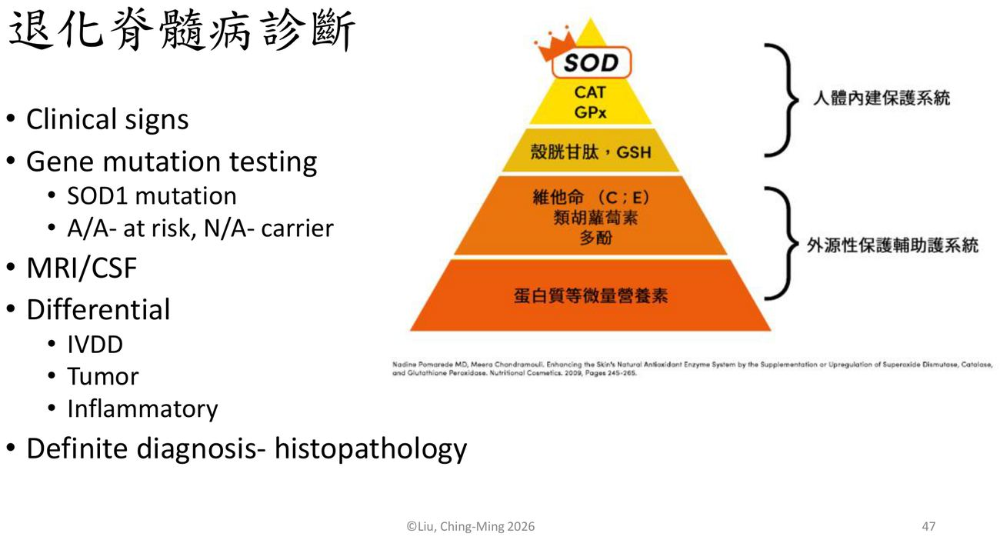
臨床分級必考 學長姐整理
後肢無力，走路步態改變，尾巴位置改變，後肢磨地，後趾甲磨損不均，起立困難
站立困難，後肢窄距，站立時後肢搖晃，腳背著地頻率增加，後肢交叉打架，可能出現排糞失禁（尤其夜間睡眠時）
尾巴沒活動，站立或走路經常跌倒，跨越伸肌反射（cross extensor reflex）異常，後肢失去自主運動，糞尿失禁，完全需要協助起身
疾病進展時間軸與神經學分期（上運動神經元（UMN）→下運動神經元（LMN） 演進）理解
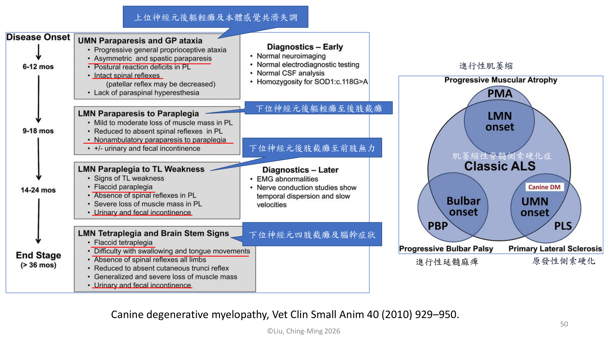
退化性脊髓病治療與照顧理解
Acupuncture 針灸
Laser 雷射
PROM／Massage
Pool／UWTM 水療
再加上治療性運動（therapeutic exercises）與輔具（assisted devices）。
復健強度與存活期的實證關聯必考
研究比較不同復健積極程度對疑似 DM 犬隻存活期的影響：
- 完全沒做復健：存活期 55 天
- 中度復健（居家運動復健每天 3 次，水療每週 1 次）：存活期 130 天
- 積極復健（居家運動復健每天 3–5 次，每天 3 次按摩及 PROM，或每天水療）：存活期 255 天
復健強度與存活期呈現明確的量效關係，是臨床上說服飼主投入積極居家復健最有力的數據依據。
詳細物理治療處方表理解
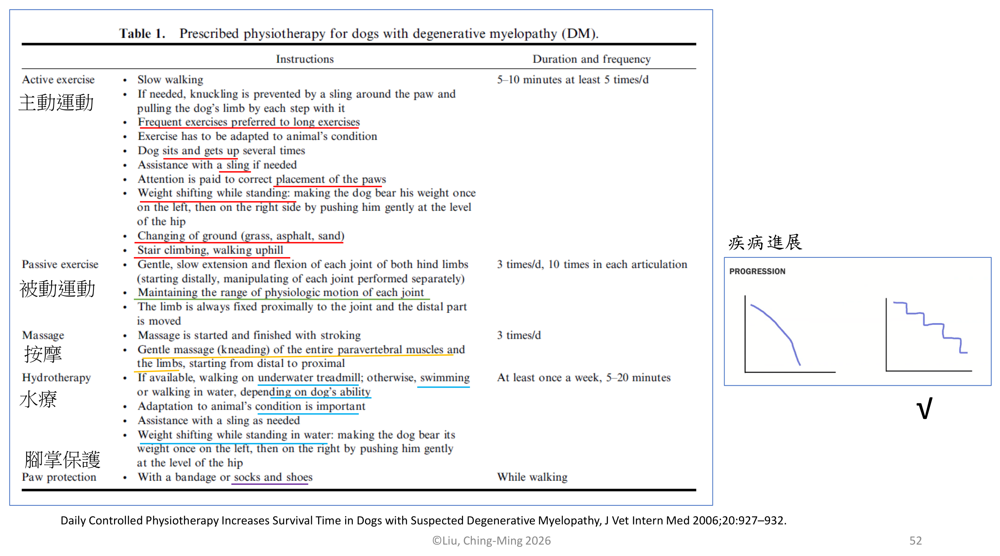
游泳與水中跑步機（UWTM）的差異必考
- 不負重運動
- 增進自主關節活動
- 對上半身有益
- 增進核心及軀幹鍛鍊
- 動物較容易感到有趣、配合度高
- 可調整式負重運動（依水位調整負重比例）
- 增進自主關節活動
- 本體感覺訓練
- 增進平衡能力
- 適合術後早期即介入的運動
其他照護重點看過
- 腳背反摺翻正：DM 犬常見腳背翻折（knuckling）未即時矯正，需訓練照顧者留意並協助翻正。
- 保護及止滑：地面防滑處理、穿戴保護靴，降低摩擦傷與跌倒風險。
- 輔具協助：依病期進展適時導入吊帶、輪椅等輔具，維持生活品質。
發病年齡與預後必考
- 發病多在 5 歲以上，大型犬平均約 9 歲發病，多數 8 歲以上；柯基犬平均發病年齡約 11 歲。
- 整體預後不佳，治療目標多設定為延長生命至少 6 個月。
雷射治療劑量與 退化性脊髓病（DM） 存活期的實證研究理解
比較不同雷射治療條件對犬退行性脊髓病的效果：
| 方案 | 雷射參數 | 照射方式 | 照射時間 |
|---|---|---|---|
| A 組（n=6） | 3 級雷射，904nm，0.5W，8 J/cm²／點，20 點 | 點對點方式，治療面積 650–1000 cm² | 5 分 20 秒 |
| B 組（n=14） | 4 級雷射，980nm，6–12W，14–21 J/cm² | 掃描方式，治療面積 650–1000 cm² | 25 分 15 秒 |
兩組皆合併復健治療（醫院及居家運動復健）。結果：B 組（高功率、較長照射時間）由症狀發生至安樂死時間為 38.2 個月，顯著長於 A 組的 11.09 個月；由症狀發生至無法負重後軀輕癱，B 組為 31.76 個月，同樣顯著長於 A 組的 8.79 個月。結論：較高功率、較長時間的雷射治療方案可顯著延緩病程進展並延長存活時間。
※ 講義 p.56 B 組時間寫「25-26分鐘15秒」，原文應是約 25 分 15 秒到 26 分 15 秒之間，照原文保留。
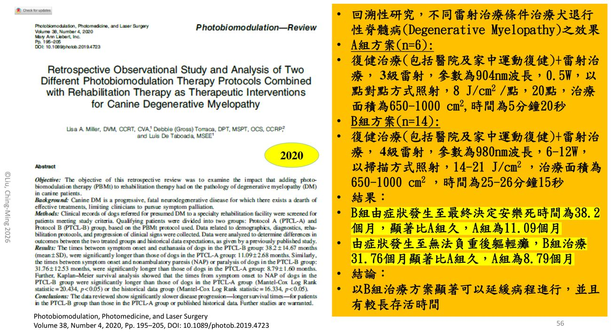
學習重點整理
考試／臨床實務角度整理，複習前先快速掃過本節。
練習題 Practice Quiz
先自己作答再展開；解析附講義頁碼。第 1–2 題對應學長姐整理「有考這個，挖掉問你是啥」的定位表。
1. 選擇題
犬前肢反射與張力正常，後肢反射增強、張力增加（UMN），步態為大步共濟失調。病灶最可能在：
(A) C1–C5 (B) C6–T2 (C) T3–L3 (D) L4–S1
2. 填表題
填出下表的 UMN／LMN／正常：
| C1–C5 | C6–T2 | T3–L3 | L4–S3 | |
|---|---|---|---|---|
| 前肢 | ? | ? | ? | ? |
| 後肢 | ? | ? | ? | ? |
前肢：UMN／LMN／正常／正常；後肢：UMN／UMN／UMN／LMN（p.8–9）。記法（補充）：C6–T2 有臂神經叢、L4–S3 有腰薦神經叢，病灶落在神經叢那一段，該肢就是 LMN；病灶以上的肢正常，以下的肢是 UMN。
3. 選擇題
神經功能恢復順序（NDS）正確的是：
(A) 側躺 → 坐立 → 趴正 → 站立 → 行走 (B) 側躺 → 趴正 → 坐立 → 站立 → 行走 (C) 趴正 → 側躺 → 站立 → 坐立 → 行走 (D) 側躺 → 站立 → 趴正 → 坐立 → 行走
4. 選擇題
講義各疾病的四階段復健時間軸，鞏固期（consolidation phase）是：
(A) 第 1–5 天，促進修復 (B) 第 5–21 天，活動所有關節與肢體 (C) 第 21–60 天，恢復協調與動作 (D) 第 61 天以後，強化核心與背肌
5. 選擇題
寰樞椎（A/A）不穩定的組織期復健，講義特別寫的限制是：
(A) 禁止游泳 (B) 禁止玩耍、禁止爬樓梯 (C) 禁止 UWTM (D) 禁止被動關節活動
6. 選擇題
IVDD type I 術後，增生期什麼條件下才加入 UWTM？
(A) 深層痛覺恢復 (B) 出現自主運動（motor movement） (C) 術後滿 21 天 (D) 傷口拆線
7. 選擇題
下列何者屬於「非壓迫性」椎間盤相關疾病？
(A) Hansen type I (B) Hansen type II (C) HNPE (D) ANNPE
8. 選擇題
坐骨神經（L6–S2）損傷的犬，講義描述的表現是：
(A) 完全無法負重 (B) 可負重，但無法屈膝、也無法屈伸跗關節與趾，呈腳背著地（knuckling）與蹠行 (C) 膝關節無法伸展 (D) 前肢 LMN
9. 選擇題
急性特發性多發性神經根炎（浣熊犬麻痺症）的敘述何者正確？
(A) 侵犯背側神經根 (B) 由前往後進展、UMN 徵象 (C) 3–6 週內可自行痊癒，急性期目標是誘發屈肌反射 (D) 需要緊急手術減壓
10. 選擇題
下列何者屬於「神經抑制（放鬆）術」而不是 PNF？
(A) Tapping (B) Quick stretching (C) Prolonged slow stretch (D) Toe pinching with withdrawal reflex
11. 選擇題
Kathmann 2006 研究中，積極復健的疑似 DM 犬存活時間約為：
(A) 55 天 (B) 130 天 (C) 255 天 (D) 38.2 個月
12. 是非題
疑似 DM 的犬做 MRI 發現椎間盤突出，就可以排除 DM。
13. 臨床情境題
9 歲柯基犬，3 個月來後肢無力、步態改變、後趾甲磨損不均、尾巴位置改變，沒有疼痛。SOD1 基因檢測為 A/A。
(1) 目前 DM 分級？
(2) 分級加重到 Stage 2、Stage 3 各會出現什麼？
(3) 講義列的治療與照顧有哪些？
(4) 想說服飼主積極做居家復健，可以引用什麼數據？
14. 臨床情境題
6 歲臘腸犬，IVDD type I 半椎板切除術後第 2 天，後肢癱瘓、深層痛覺存在。
(1) 急性期（1–5 天）講義列的處置？
(2) 講義引用哪兩個儀器研究可在術後使用？參數？
(3) 若深層痛覺消失超過 48 小時，對預後的意義？